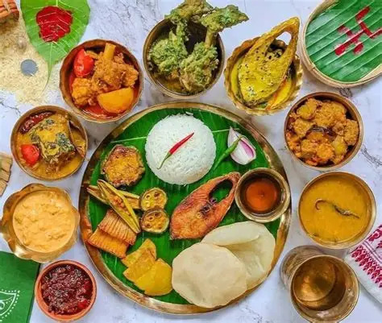

Bengali cuisine is appreciated for its fabulous use of panchphoron, a term used to refer to the five essential spices, namely mustard, fenugreek seed, cumin seed, aniseed, and black cumin seed. The specialty of Bengali food lies in the perfect blend of sweet and spicy flavors.